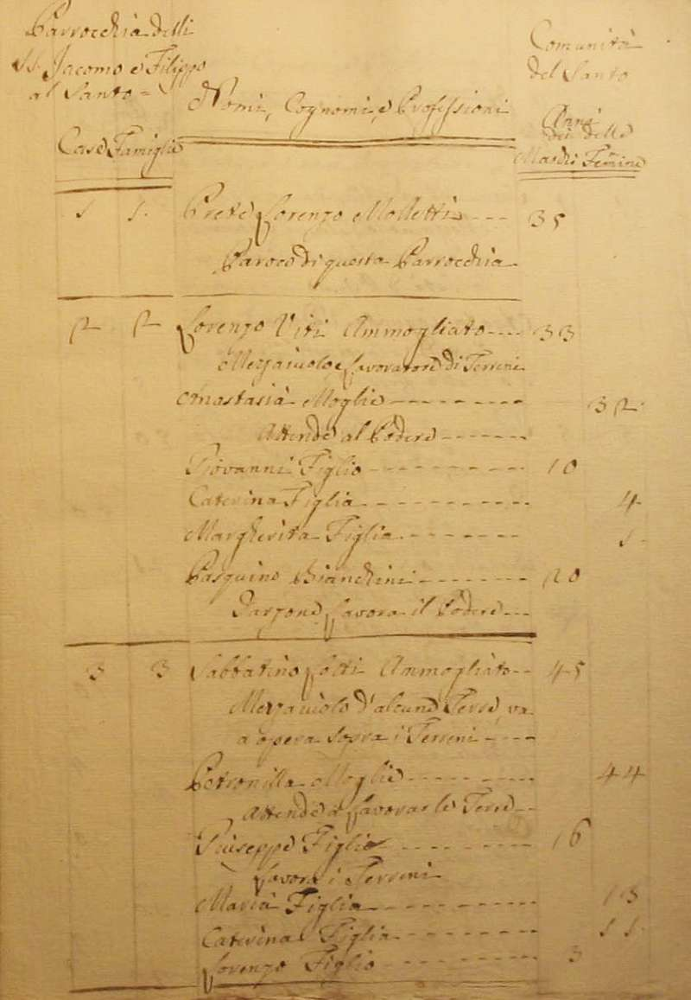
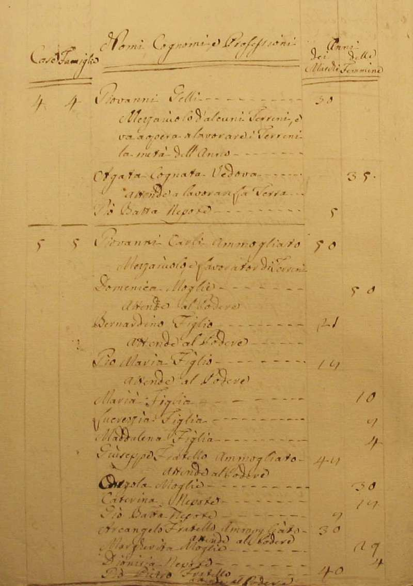
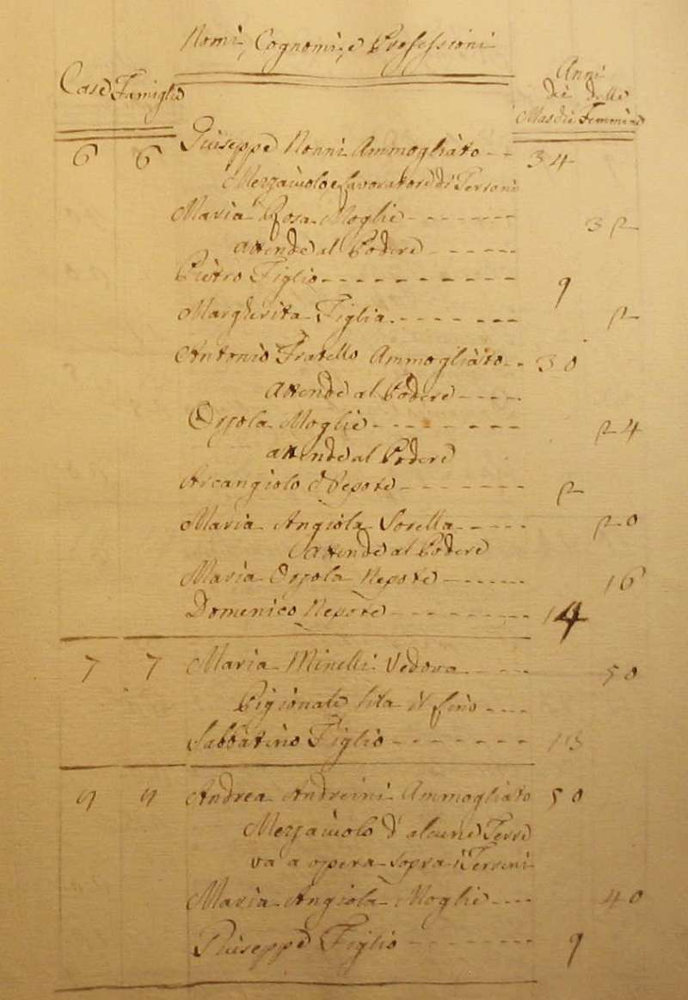
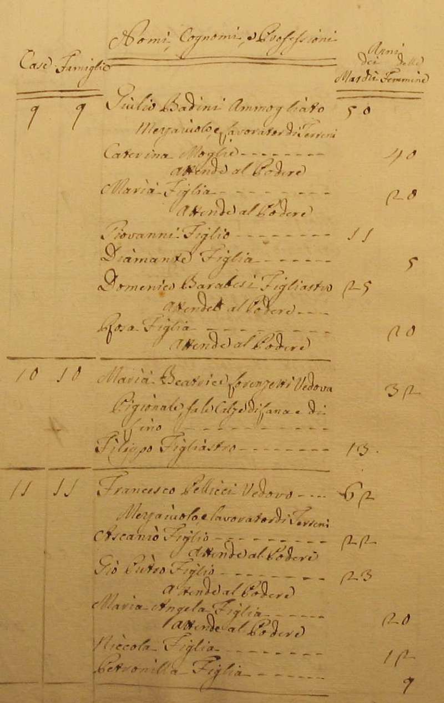
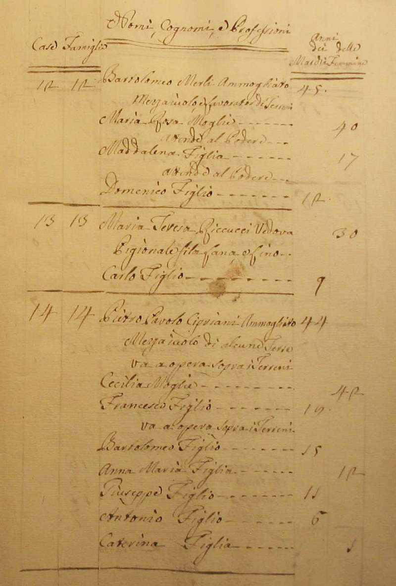
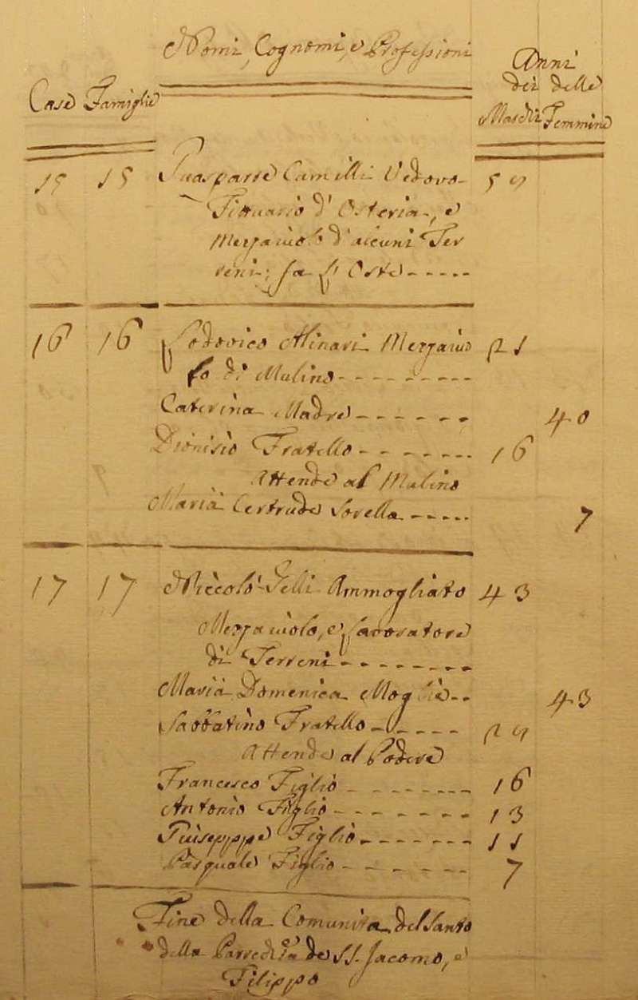

|
| Anno 1767 | |||
|
Ritorna all'indice delle parrocchie Il numero abbinato ad ogni famiglia indica la relativa posizione nello Stato delle Anime 1 - Prete Lorenzo Molletti - Paroco di questa Parrocchia 2 - Vivi Lorenzo - mezzaiuolo lavoratore di terreni 3 - Lotti Sabatino - mezzaiuolo d'alcune terre va a opera sopra i terreni 4 - Gelli Giovanni - mezzaiuolo d'alcuni terreni va a opera a lavorare i terreni 5 - Carli Giovanni - mezzaiuolo lavorator di terreni - 15 6 - Nonni Giuseppe - mezzaiuolo lavoratore di terreni 7 - Minelli Maria - vedova - pigionale fila il lino - 2 8 - Andreini Andrea - mezzaiuolo d'alcune terre va a opera sopra i terreni 9 - Badini Giulio - mezzaiuolo lavorator di terreni 9 - Barabesi Domenico - figliastro - vive in casa di Badini Giulio attende al podere 10 - Lorenzetti Maria Beatrice - vedova - pigionale fa le calze di lana e di lino 11 - Pellicci Francesco - mezzaiuolo - e lavorator di terreni 12 - Merli Bartolomeo - mezzaiuolo - e lavorator di terreni 13 - Riccucci Maria Teresa - pigionale fila lana e lino 14 - Cipriani Pietro Pavolo - mezzaiuolo d'alcune terre - va a opera sopra i terreni 15 - Camilli Guasparre - fittuario d'osteria e mezziuolo d'alcuni terreni fa l'oste - 8 16 - Alinari Lodovico - mezzaiuolo di mulino - 4 17 - Gelli Niccolò - mezzaiuolo - e lavoratore di terreni - 7       Ritorna all'indice delle parrocchie |